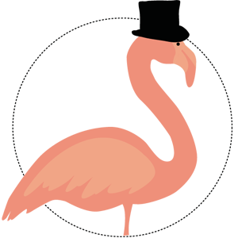

Présentation Projet Professionnel
Guillaume Barranco
Qui suis-je ?

En direction le DUT pour une overview globale
- Réseaux
- Graphisme
- Marketing
- Gestion de Projet
- Développement web
- Analyse de signaux
- Video
- etc...
En direction le DUT pour une overview globale
- Réseaux
- Graphisme
- Marketing
- Gestion de Projet
- Développement web
- Analyse de signaux
- Video
- etc...


Première alternance d'un an
Full Stack (Front + Back)
Preprod, Prod. Consolidations de toutes les notions

CDI + Alternance 2 ans


Parce qu'il faut bien être fier
Noddi
Compétition IESA Multimedia
Meilleur stratégie digitale + Meilleur développeur
Mia
Née pour tester une librairie Javascript de reconnaissance vocale
Gérer la lumière vocalement
- Météo
- Programme TV
- Classement ATP
- Calendriers / Anniversaire
- Définition de mots
- etc...
Objectif pour la suite de Mia
- Rajouter des sentiments et émotions variables
- La faire apprendre toute seule (via Internet)
- La brancher sur le reste de la maison (Volets électriques, musique etc...)
Objectif
=> Devenir un expert
Points forts
- Curieux
- Adore les challenges
- Conscience du client
Points faibles
- La dispersion